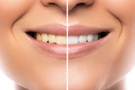

sample blog piece for copywriting practice
This is a sample blog piece I've written as an illustration of my copywriting.
Teeth whitening is big business. It’s estimated that around the world, over US$11 billion was spent in 2017 on tooth whitening procedures and products.
So, why are people spending this kind of money on tooth whitening?
- It works. 82% of survey participants said that they noticed an improvement in their tooth colour after professional treatment, as did almost 64% of people using at-home treatments
- An attractive smile is almost universally seen as a social asset, so people want to have one to show off to friends and family, as well as potential partners and employers
- There’s also the social media factor. Younger people tend to be more influenced by media posts, and it can be argued that social media influencers on channels such as Instagram and TikTok feed into that influence. Given the chance to have teeth as attractive and white as your favourite influencer, why wouldn’t you take it?
With this kind of benefit, it’s easy to understand why people would want to invest in some form of tooth whitening product.
If you’re going to use tooth whitening products, though, there are a lot of options to pick from. How would a customer know which one’s right for them? These are some of the trends which are big in tooth whitening at the moment:
- whitening toothpastes are a great option because customers are already brushing twice a day (or should be…). There’s no extra effort required and no chemicals to deal with
- trays, strips and gels apply whitening agents straight onto the teeth. The results are quicker than toothpaste, but there’s a risk of tooth sensitivity or irritation for some people
There’s also a trend for less synthetic solutions at the moment:
- a baking soda mixture can help remove surface stains; however, many whitening toothpastes already contain baking soda
- some people have tried using a dilute hydrogen peroxide mixture in the same way as a mouthwash. Again, you’ll find hydrogen peroxide in some whitening toothpastes. The biggest problems with hydrogen peroxide, though, are that it can cause tooth sensitivity, and that swallowing it really isn’t a good idea!
- oil pulling - this is an Ayurvedic (Indian medicine) treatment which involves using oil (frequently coconut oil) in the same way as a mouthwash to remove staining. There isn’t any scientific evidence that it whitens smiles at this time.
- charcoal products have trended recently, but there’s an element of short term gain for long term pain. The science isn’t strong enough to prove that it works, and using charcoal may erode tooth enamel in the long term.
So, with all these home treatment options available, it’s important that consumers do their homework before picking a solution. Some solutions simply won’t work; others may have unpleasant side effects, and others may lead to a trip to the dentist for more extensive (and expensive) treatment than simple tooth whitening.
Sources:
Trends in teeth whitening The teeth whitening market The hazards of hydrogen peroxide